Dos mundos fuertes,
interiores por debajo.
Recorrí el sitio como está en producción (main b184540): el home, las dos portadas, todos los interiores, el modal de evento, la transición en las dos direcciones, celular y escritorio, noche y día. Cada hallazgo tiene su captura. Las referencias son verificadas (cada URL abierta y comprobada; lo que no se pudo verificar quedó afuera). Nota general: 6,8 / 10. Las portadas ya son de nivel de estudio; lo que baja la nota son los interiores, la transición y detalles de sistema.
Hallazgos
Ordenados por mundo. La etiqueta es la prioridad: alta se nota en el primer minuto de uso; media baja la calidad percibida; baja es terminación.
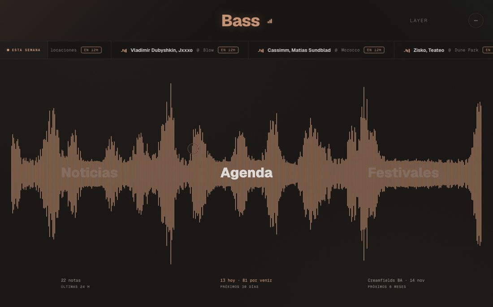
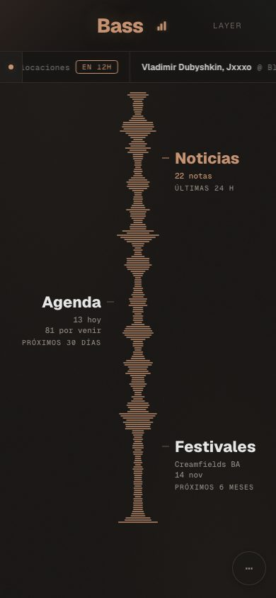
B1El título elegido queda plano alta
En reposo cada palabra está hecha de barras de la onda; al elegirla, las barras se engrosan hasta que la letra queda blanca y sólida: sale de la frecuencia en vez de ser parte de ella. En el celular el nombre de afuera solo cambia de color.
PropuestaLa palabra adopta la silueta de la onda: cada columna de la letra se estira o se aplasta con la altura de su barra en ese cuadro, sobre la misma grilla de columnas que la onda (como la Philharmonie Luxembourg de NB Studio). Un solo eje deformable, el vertical, con un tope para que siempre se lea (como el Symphonizer de Dinamo para SF Symphony), y las barras pasando por delante y por detrás de la letra (oclusión, como el gráfico original de Unknown Pleasures). En el celular, lo mismo en horizontal: el nombre se estira hacia la onda con sus barras.
B2La onda empieza y termina cortada media
El primer y el último tramo arrancan con barras altas pegadas al borde (a la derecha, un pico casi vertical). Se lee como un recorte del tema, no como un tema que empieza y termina.
PropuestaUna entrada y una salida de la envolvente (fade in / fade out de 2 a 3 % del ancho), como el principio y el final de un track.
B3El dato de cada parte, lejos y gris baja
"13 hoy · 81 por venir" queda ~240 px debajo de su palabra, en mono chico. El dato es lo que hace real a la onda y hoy es lo que menos se ve.
PropuestaAcercarlo a la palabra elegida (aparece debajo de ella al elegirla) y dejar al pie solo el rango.
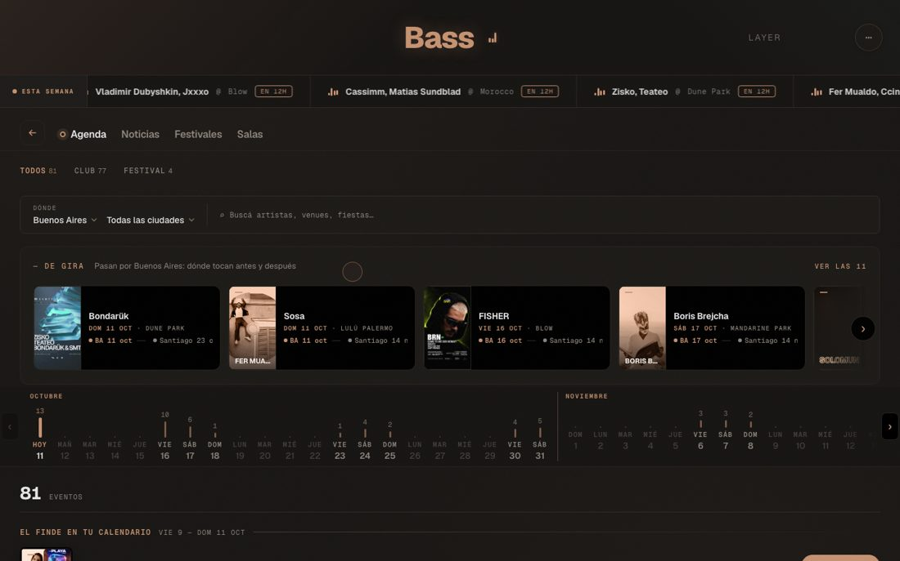
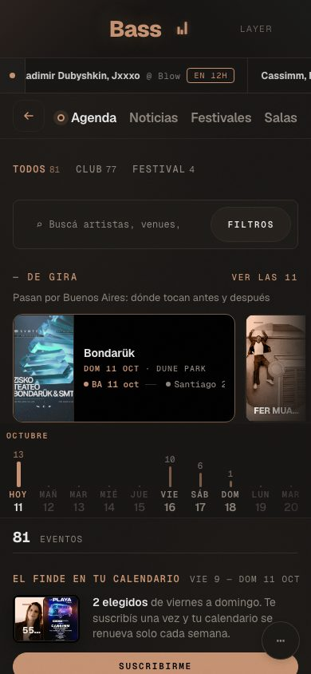
B4La Agenda tarda en mostrar la agenda alta
Antes del primer evento hay siete capas: pestañas, Todos/Club/Festival, dónde + búsqueda, De gira, el riel de días, el contador y El finde. En una pantalla de 900 px de alto no se ve ningún evento; en el celular, tampoco.
PropuestaAgenda tipo Berghain: el contenido primero. Los filtros en una sola línea, De gira y El finde dentro de la lista (en su día), el riel de días pegado arriba al hacer scroll. Que el primer evento entre en la primera pantalla.
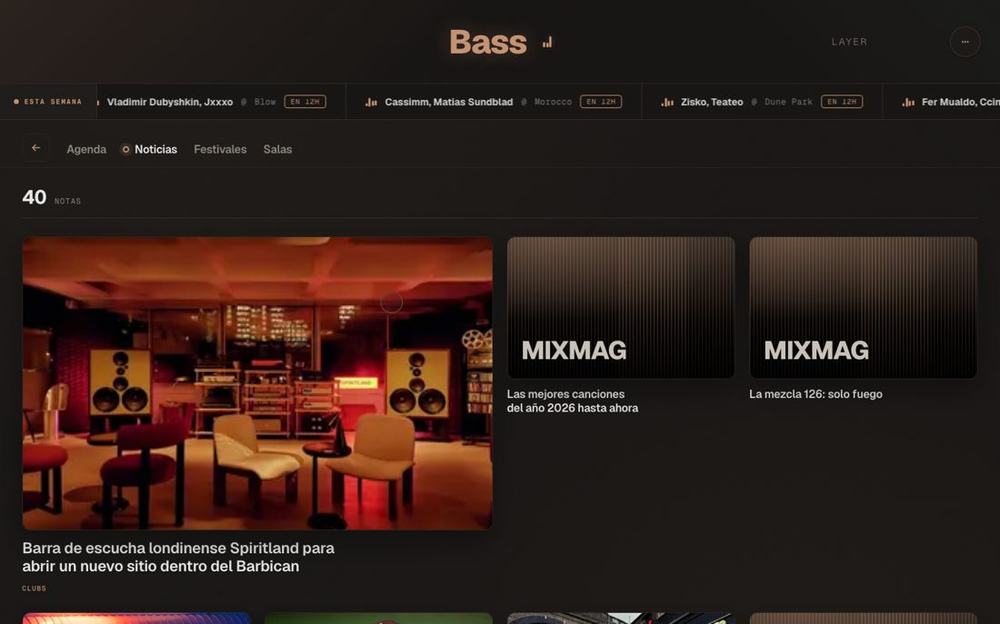
B5Noticias abre con afiches vacíos media
Dos de las tres primeras notas no tienen foto y muestran el afiche de la casa "MIXMAG". La portada de Noticias se ve vacía aunque haya 40 notas.
PropuestaOrdenar la primera fila priorizando notas con imagen (sin perder el orden por hora en el resto) y que el afiche de la casa varíe por fuente y tema.
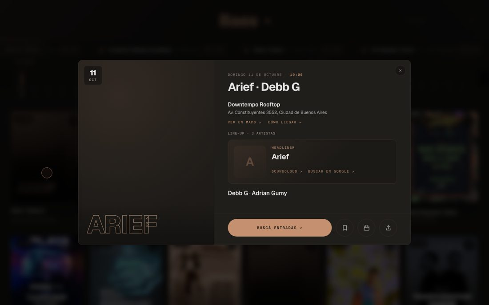
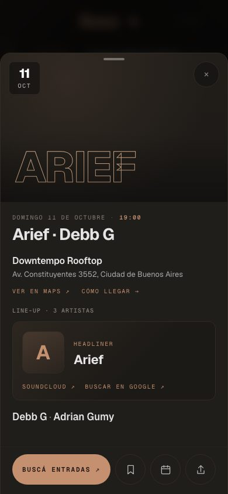
B6El evento sin flyer se ve sin terminar media
Media ficha queda oscura con el nombre calado abajo, y el headliner sin foto es una "A". Es justamente el caso más común en eventos chicos.
PropuestaUn afiche de la casa para eventos sin flyer, con la misma lógica que la ficha: fecha, sala y line-up compuestos, y la onda del día de fondo. La columna izquierda nunca vacía.
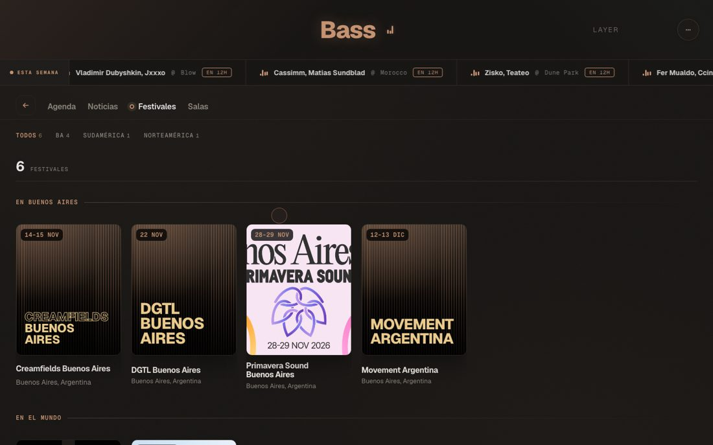
B7Festivales mezcla dos tipos de afiche baja
Afiches tipográficos de la casa al lado de flyers reales, y un flyer recortado ("…nos Aires").
PropuestaUn solo tratamiento: el flyer real siempre entero (contenido, no recortado) sobre el mismo marco que el afiche de la casa.
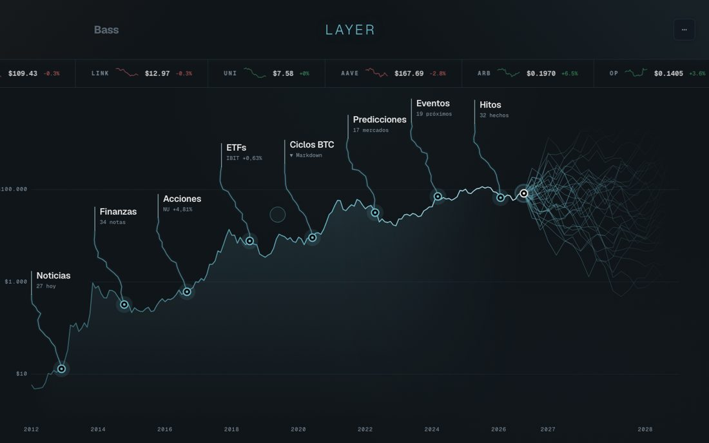
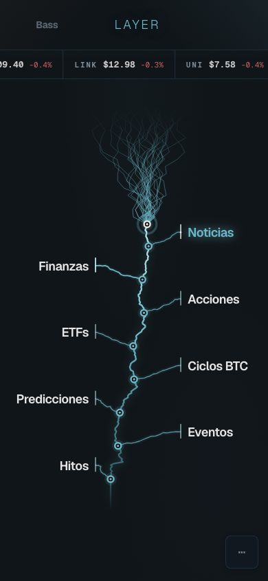
L1La portada es la pieza más sólida baja
Cada rama lleva a su sección con su dato vivo; escala honesta, años al pie. Único punto: el abanico de proyecciones a la derecha es tan denso que compite con el "hoy".
PropuestaMarcar el presente como frontera dentro de la curva (como mempool.space separa lo pendiente de lo minado), con el abanico un paso más tenue que la curva real.
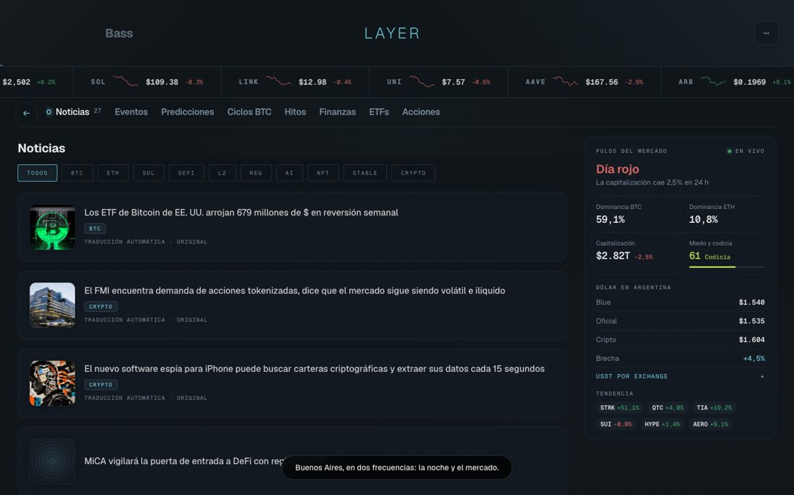
L2El "Pulso del mercado" se repite en cada pestaña media
Noticias, Ciclos BTC y Acciones llevan la misma columna a la derecha (Día rojo, dominancia, dólar, tendencia). Ocupa un tercio de la pantalla y dice lo mismo en todos lados.
PropuestaEl pulso una sola vez: en la portada (junto al "hoy" de la curva) o como una franja de una línea arriba de cada interior, como ya hace el celular ("Día rojo · F&G 61 · Blue $1.540").
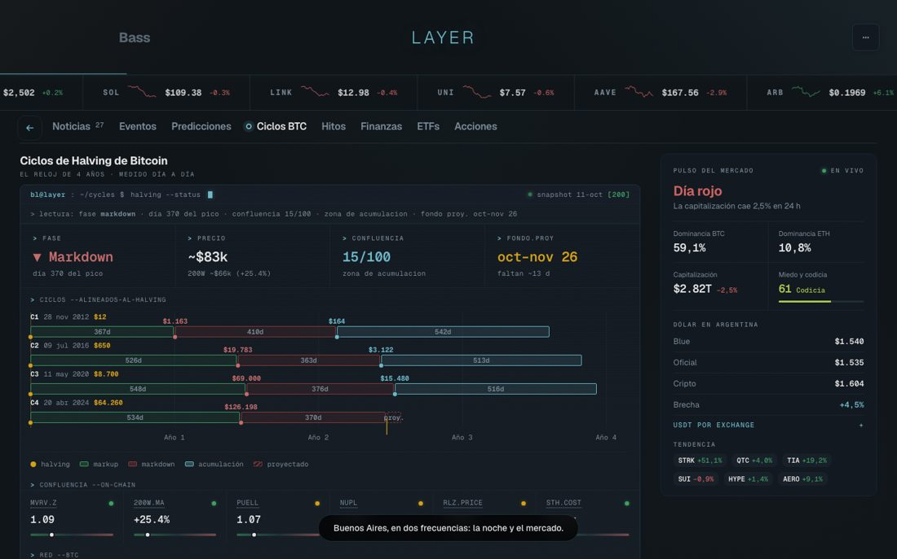
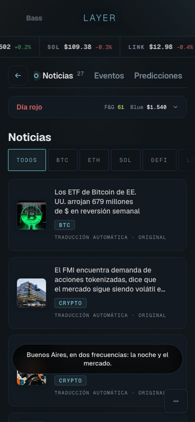
L3Ocho pestañas y textos de 10 px media
Noticias, Eventos, Predicciones, Ciclos BTC, Hitos, Finanzas, ETFs y Acciones: en el celular la mitad queda fuera de pantalla. En Ciclos BTC hay 20 textos de 10 px en escritorio y 8 en el celular (medidos).
PropuestaAgrupar en las mismas familias que la portada (Cripto · Mercados · Noticias) y llevar los rótulos de datos a 11 px como mínimo, la misma regla que pusimos en el home.
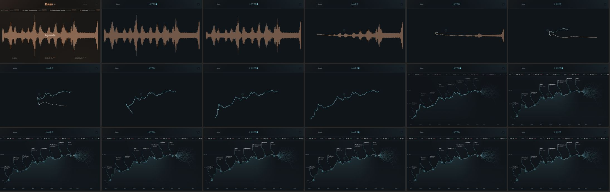
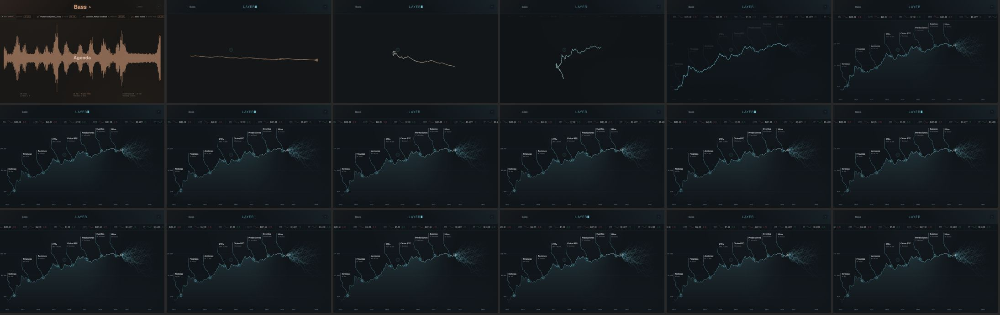
T1Hoy corta, se vacía y golpea alta
Arriba, la de hoy: apagón y salto de color en el primer cuadro, la línea se dobla en "Z", casi un segundo de pantalla vacía y Layer aparece de golpe. Abajo, el prototipo de la rama transicion: sin vacío, cambio de color gradual y Layer entrando desde la mitad del viaje. Es mejor, pero todavía quedan los puntos T2 y T3.
T2No se puede interrumpir ni tiene simetría media
Si se toca el otro mundo a mitad del viaje, el código salta directo, sin animación. La vuelta Layer → Bass reproduce el mismo viaje pero no el mismo camino al revés.
PropuestaUn segundo toque da vuelta la línea desde donde está (como pide Apple en Designing Fluid Interfaces), y la vuelta recorre el mismo camino invertido. Tiempos de Material 3: salida con cubic-bezier(.3,0,.8,.15), llegada con cubic-bezier(.05,.7,.1,1).
T3Dos lenguajes para cambiar de mundo media
Desde el encabezado, la línea viaja; deslizando con el dedo, la pantalla simplemente se corre. En el celular, que es donde más se desliza, casi nunca se ve el puente.
PropuestaEl deslizamiento arrastra la misma línea: la onda se comprime siguiendo el dedo y, al soltar, termina el viaje. El elemento compartido nunca desaparece; lo que cambia es todo lo de alrededor.
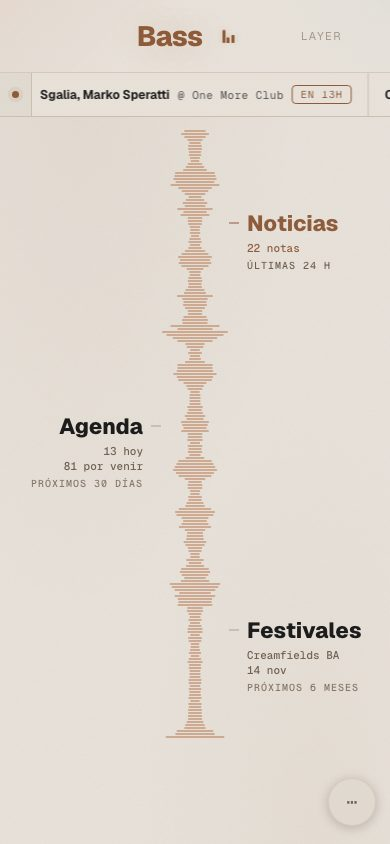
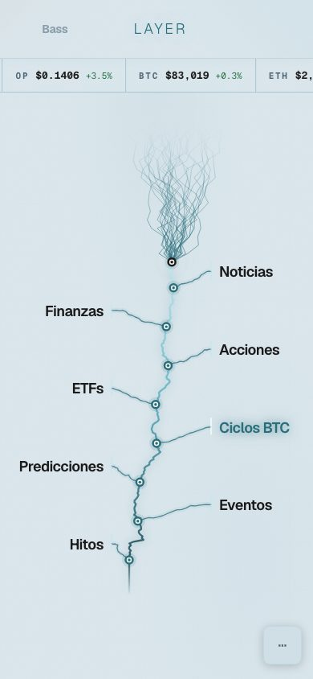
S1El encabezado cambia de forma entre mundos media
En Bass, "Bass" grande al centro y "LAYER" chico a la derecha; en Layer, "Bass" chico a la izquierda y "LAYER" fino al centro con cursor. El mundo de enfrente, que es la única puerta al otro lado, cambia de lugar y es muy tenue.
PropuestaLos dos nombres siempre en el mismo lugar (Bass a la izquierda, LAYER a la derecha, como en la ficha) y el activo encendido: el encabezado es la ficha en una línea, y es el punto de partida natural de la transición.
S2El contenedor de los mundos se puede correr baja
Durante las pruebas automáticas, un desplazamiento programático corrió el contenedor de los dos mundos y la página quedó partida a un tercio. Un usuario difícilmente lo provoque, pero el contenedor usa overflow: hidden, que se puede desplazar por código.
Propuestaoverflow: clip en el contenedor: una línea, y queda blindado.
S3La bienvenida queda sobre el contenido en la primera visita baja
Si se entra directo a un interior (un link compartido) y no se hace ningún gesto, la línea "Buenos Aires, en dos frecuencias" tapa un titular hasta el primer scroll.
PropuestaMostrarla solo en el home, o que se vaya sola a los pocos segundos.
Principios para lo que sigue
Sacados de las referencias verificadas (abajo), aplicados a BassLayer.
Títulos con forma de onda
- Misma grilla. La letra se construye con las mismas columnas que la onda; no es un título apoyado encima.
- Un solo eje deformable, con tope. Solo la altura de cada columna cambia, con un mínimo para que siempre se lea.
- Oclusión, no transparencia. Las barras pasan por delante y por detrás de la letra: vive adentro del lecho.
- La forma sale del dato. La silueta que toma la palabra es la de su parte del tema (los datos reales de esa sección), no ruido.
Transición entre mundos
- El elemento compartido nunca desaparece. La línea es el único actor continuo; el fondo y la interfaz cambian alrededor.
- Arranca en el toque. El movimiento empieza sin esperar al otro mundo; el destino se mide antes de llegar (FLIP).
- Orden: se va lo viejo, viaja la línea, entra lo nuevo escalonado. Tiempos y curvas de Material 3.
- Simetría e interrupción: la vuelta por el mismo camino; un segundo toque la da vuelta sin reiniciar.
- Movimiento reducido: un fundido corto, no un corte seco.
Hoja de ruta
Ahora
- B1 Títulos de Bass con la silueta de la onda (escritorio y celular).
- T1–T3 Transición v2: línea permanente, arranque inmediato, simetría, interrupción, deslizar con la misma línea.
- S1 Encabezado simétrico (la ficha en una línea).
- B2 · S2 Bordes de la onda y overflow: clip.
Siguiente
- B4 Agenda con el contenido primero.
- L2 · L3 Pulso una sola vez y pestañas de Layer agrupadas.
- B5 · B6 Noticias con imagen arriba; afiche de la casa para eventos sin flyer.
Después
- B3 El dato de cada parte junto a su palabra.
- B7 Un solo tratamiento de afiches en Festivales.
- L1 El presente como frontera en la curva.
- S3 Bienvenida solo en el home.
Referencias verificadas
Philharmonie Luxembourg · NB Studio con Patrik Hübner, 2023. Columnas verticales que pulsan con la onda real y ordenan el texto. La más cercana a la onda de Bass.
San Francisco Symphony · COLLINS + Dinamo, 2021. Fuente variable que se estira con el audio; deforma sin perder lectura.
De Bijloke · Pentagram, Marina Willer. Logo generativo expresivo con una tipografía neutra como ancla.
MIDI · Pentagram, Sascha Lobe con Yuri Suzuki. La forma sale de una señal real (440 → 880 Hz).
Nuits Sonores · DIA con André Burnier, 2025. Letras arrastradas por partículas que pulsan; un tipo fijo como ancla.
Unknown Pleasures · Peter Saville (1979) sobre el gráfico de Harold D. Craft Jr. Oclusión: lo alto tapa lo de atrás.
Wavefont · fuente variable donde cada carácter es una barra.
TransicionesView Transitions API · Chrome for Developers. Elementos compartidos, tipos de transición por dirección, movimiento reducido.
FLIP · Paul Lewis, 2015. Medir el destino antes de animar.
Material 3 · motion · curvas y duraciones; el elemento persistente como el vínculo más fuerte entre pantallas.
Designing Fluid Interfaces · Apple, WWDC18. Respuesta inmediata, interrupción, simetría.
Composite rendering · Codrops, 2026. Un elemento persistente que nunca sale de pantalla.
La varaBerghain · programa · la agenda como lista seca y completa.
NTS · dos géneros + una línea editorial por pieza.
mempool.space · el presente como frontera dentro de la visualización.
ultrasound.money · una tesis por tablero, con su glosario al pie.
Método: capturas reales de producción (main b184540) a 1440 × 900 y 390 × 844, noche y día, más dos filmaciones cuadro por cuadro de la transición. La película de la vuelta Layer → Bass quedó contaminada por la propia prueba (ver S2) y esa dirección se evaluó por el código. Las notas son juicio de diseño para ordenar el trabajo, no una métrica. Las referencias se abrieron una por una; Resident Advisor, Casa da Música y Orkest Phion quedaron afuera por no poder verificarse.